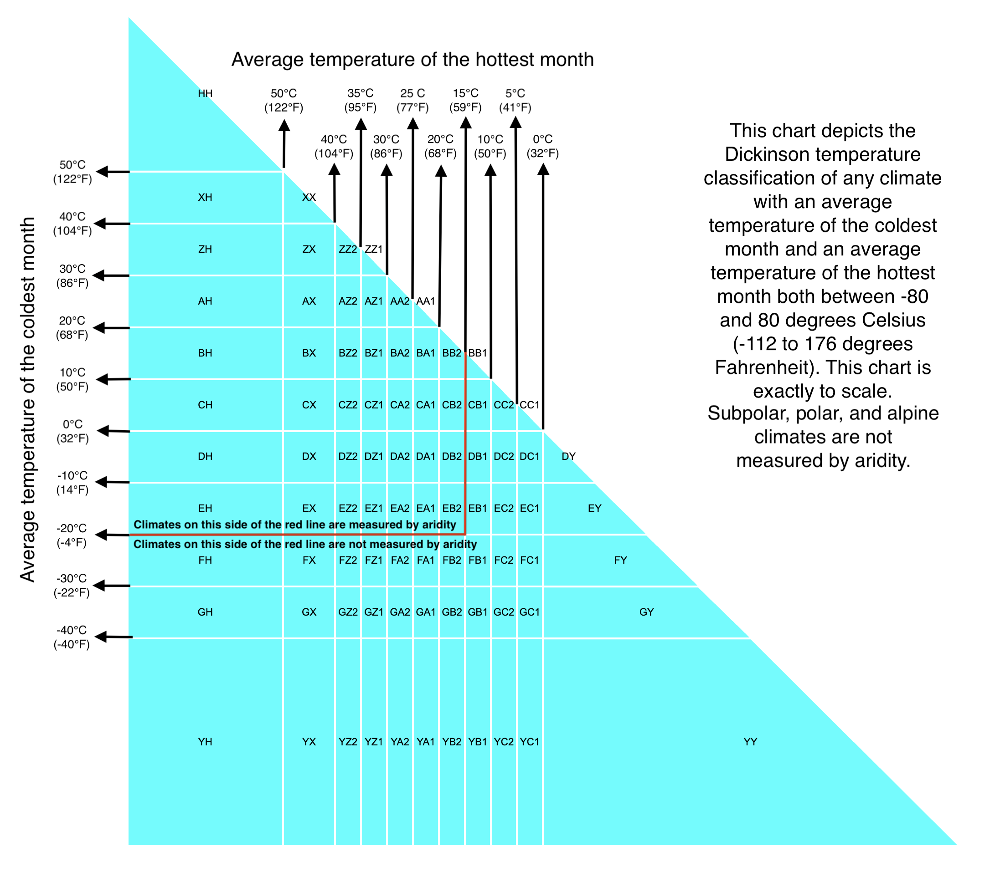
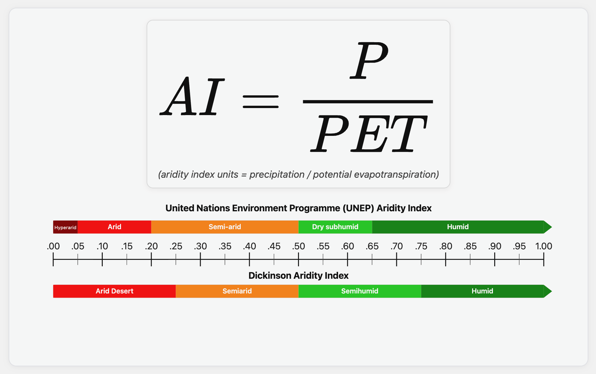

Suggested citation:
Dickinson, C. (2026).
The Dickinson Climate Classification: A Taxonomic Thermal–Hydrological Partition of Climate State Space
[Preprint]. Zenodo.
https://doi.org/10.5281/zenodo.18857604
Supplemental Figure: Dickinson Temperature Classification

Supplemental Figure: Dickinson Aridity Index (modified from UNEP aridity index)
